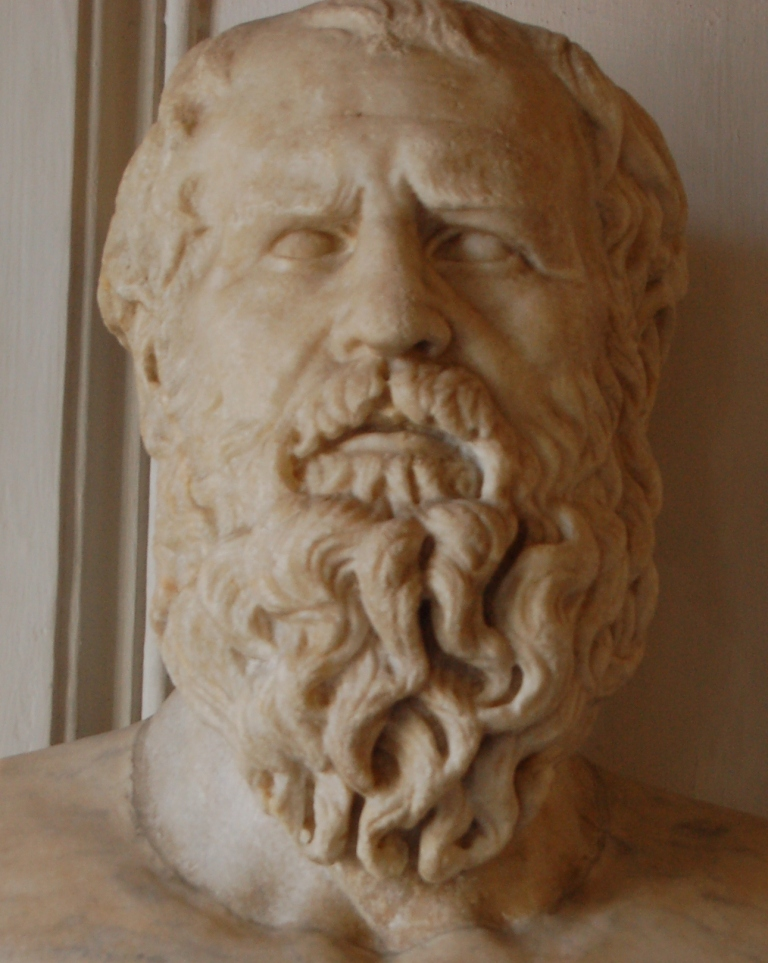

הכול זורם
הרקליטוס מזוהה עם הרעיון שהמציאות נמצאת בתנועה ושינוי מתמידים. הדימוי הידוע הוא הנהר: אי אפשר להיכנס לאותו נהר בדיוק פעמיים.
פילוסופיה · קדם־סוקרטים · אפסוס
הרקליטוס היה פילוסוף יווני מאפסוס, הידוע ברעיונותיו על שינוי מתמיד, אחדות הניגודים והלוגוס — העיקרון המסדר של המציאות.

1 · תעודת זהות
2 · ביוגרפיה
הרקליטוס חי באפסוס שבאיוניה, אזור שהיה מרכז חשוב של מחשבה יוונית מוקדמת. הוא נודע כסגנון כתיבה קצר, עמוק ולעיתים חידתי, ולכן כבר בעת העתיקה כונה לעיתים “האפל”.
כתביו לא שרדו בשלמותם, אלא בעיקר כקטעים וציטוטים אצל מחברים מאוחרים.
3 · רעיונות מרכזיים
הרקליטוס מזוהה עם הרעיון שהמציאות נמצאת בתנועה ושינוי מתמידים. הדימוי הידוע הוא הנהר: אי אפשר להיכנס לאותו נהר בדיוק פעמיים.
מאחורי השינוי עומד עיקרון מסדר — הלוגוס. זהו רעיון של חוק, תבונה או סדר פנימי שמארגן את המציאות למרות המאבק והניגודים.
4 · רקע היסטורי
5 · מורשת והשפעה
6 · הידעת?
7 · מקורות
כתביו של הרקליטוס לא שרדו בשלמותם. מה שנותר בידינו הוא אוסף פרגמנטים וציטוטים אצל מחברים מאוחרים. הנוסח כאן הוא עיבוד תרגומי קצר לרעיונות המפורסמים ביותר.
“אי אפשר להיכנס לאותו נהר פעמיים.”
“הכול משתנה, ושום דבר אינו נשאר כשהיה.”
“הדרך למעלה והדרך למטה — אחת היא.”
“המאבק הוא אבי הכול ומלך הכול.”
“יש להקשיב לא לי, אלא ללוגוס, ולהסכים כי הכול אחד.”
Heraclitus’ writings survive only as fragments quoted by later authors. The selections below are short interpretive renderings of some of his most famous ideas.
“No one steps into the same river twice.”
“Everything changes, and nothing remains fixed.”
“The way up and the way down are one and the same.”
“Conflict is the father of all things and king of all things.”
“Listen not to me but to the Logos, and agree that all things are one.”